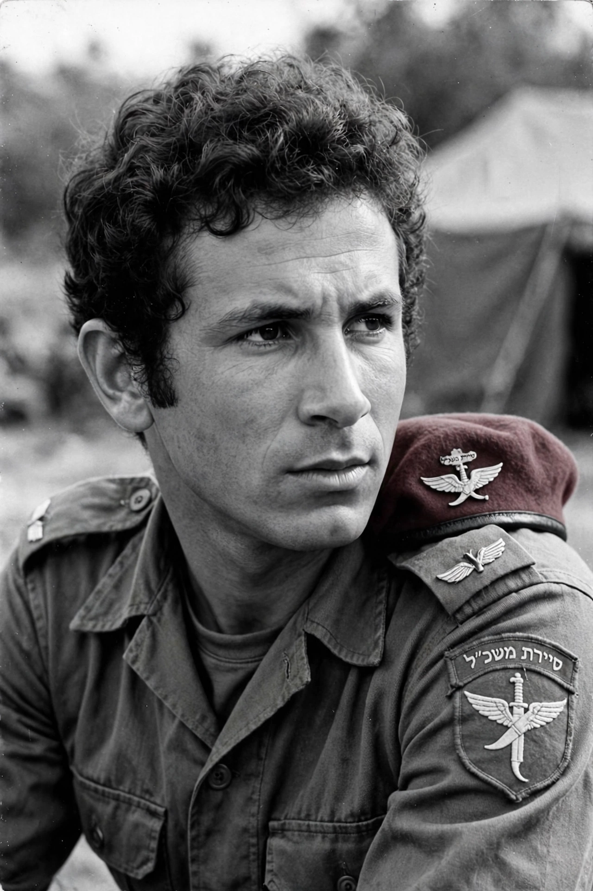

From Wikipedia, the free encyclopedia
| Yonatan Netanyahu | |
|---|---|
 Netanyahu as an IDF officer | |
| Born | 13 March 1946, New York City, U.S. |
| Died | 4 July 1976 (aged 30), Entebbe, Uganda |
| Allegiance | Israel |
| Service | Israel Defense Forces (1964–1976) |
| Rank | Lieutenant Colonel (Sgan Aluf) |
| Unit | Sayeret Matkal; Armored Corps |
| Battles | Six-Day War; War of Attrition; Yom Kippur War; Operation Entebbe |
| Relations | Benjamin Netanyahu (brother); Iddo Netanyahu (brother); Benzion Netanyahu (father) |
Yonatan "Yoni" Netanyahu (March 13, 1946 – July 4, 1976) was an Israel Defense Forces (IDF) officer who commanded the elite Sayeret Matkal unit during the rescue mission at Entebbe, Uganda, in 1976. He was killed in action while leading the assault that freed more than one hundred hostages held by Palestinian and German hijackers; the operation, formally Operation Thunderbolt, was renamed Operation Yonatan in his honour. He was the elder brother of Benjamin Netanyahu, who later became Prime Minister of Israel.
Netanyahu was born in New York City to historian Benzion Netanyahu and Tzila Segal, and spent part of his youth in the United States, graduating from high school in Pennsylvania before returning to Israel to enlist in 1964. He served in the Paratroopers Brigade, studied at Harvard University, then returned to Israel. During the Six-Day War of 1967 he fought in the Sinai and was wounded rescuing a soldier on the Golan Heights. He later commanded a company in the Armored Corps and served with Sayeret Matkal in the War of Attrition; in the Yom Kippur War of 1973 he fought on the Golan Heights, where his unit rescued wounded officers and he was decorated for his actions.
On 27 June 1976, hijackers seized Air France Flight 139 and diverted it to Entebbe Airport, Uganda, where they held 106 mostly Israeli and Jewish hostages under the protection of Idi Amin's regime. Netanyahu was chosen to command the ground assault force of the rescue mission. On the night of 3–4 July 1976, Israeli commandos flew some 4,000 km, landed at Entebbe, stormed the terminal, killed the hijackers, and freed 102 hostages. Netanyahu was shot — apparently by a Ugandan sniper in the control tower — and died aboard the evacuation aircraft. He was the mission's only Israeli military fatality.
Netanyahu was buried in Jerusalem's Mount Herzl military cemetery beside the grave of his former commander. His letters, published posthumously in Hebrew and in English as The Letters of Jonathan Netanyahu, became a widely read work in Israel. He remains a national hero, and Operation Entebbe is studied worldwide as a landmark of special-operations planning and audacity.
See also: Operation Entebbe · Sayeret Matkal · Benjamin Netanyahu